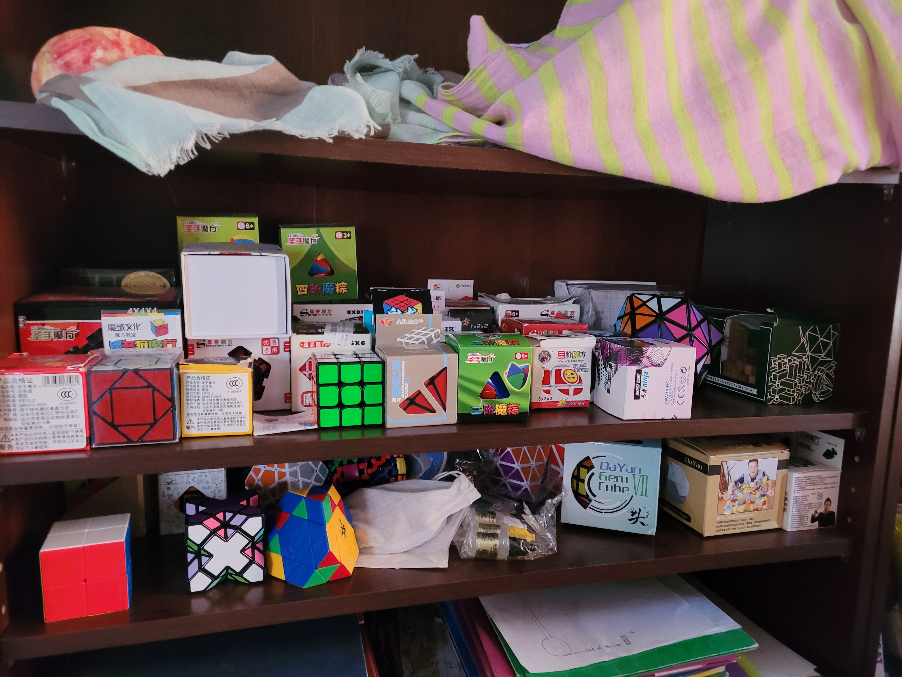
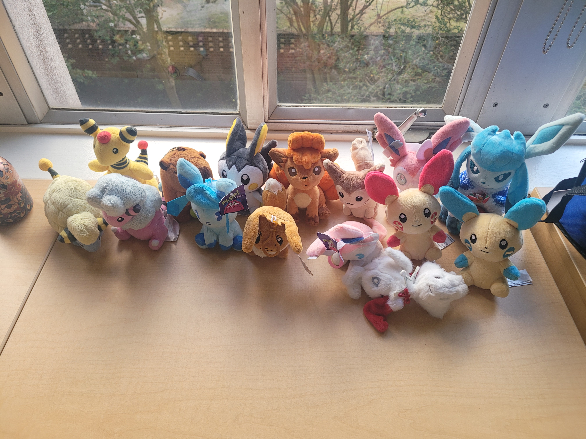
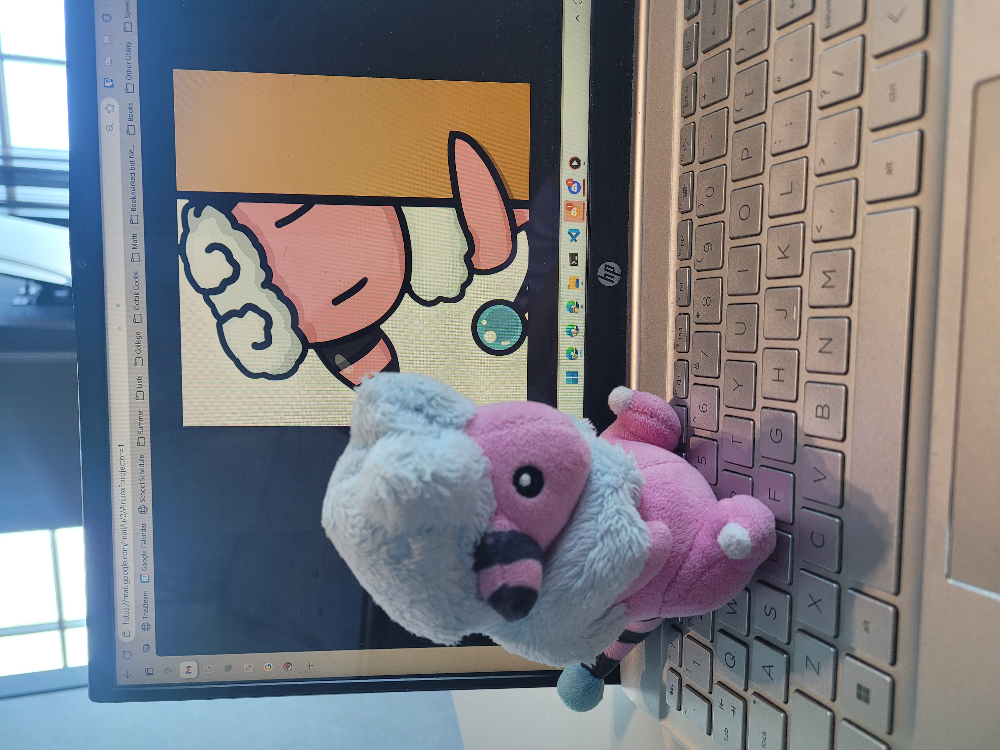

One of my most favorite photos. This is the Evgeniy Icosahedron
Carousel, which is loosely based off of the famous Dogic puzzles. Behind this puzzle are plushies of some of my favorite Pokémon.

My Rubik's puzzle collection. I do not focus on speedsolving; rather, I enjoy figuring out how to solve each puzzle on my own. I really like seeing the similarities and differences between all these puzzles. I bought my first cube when I was 6, scrambled and by some stroke of luck managed to solve by accident, scrambled again, gave up after a few hours, then forgot about it for two years until I picked it up when I was 8. It is one of my oldest and longest-lasting hobbies. I own 61 puzzles, 52 of which are unique.

The subset of my Poképlush collection that I either brought to Rice with me, or acquired while I
was there.

I like drawing too. (You can find some of my emojis in my Discord server, Togetic's Treehouse.)